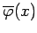
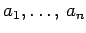

Inhalt Index DeskTop Bronstein

 Lineare Integralgleichungen Fredholmsche Integralgleichungen 2. Art Numerische Verfahren für Fredholmsche Integralgleichungen 2. Art
Lineare Integralgleichungen Fredholmsche Integralgleichungen 2. Art Numerische Verfahren für Fredholmsche Integralgleichungen 2. Art


Es werden n auf dem Intervall [a,b] linear unabhängige Funktionen vorgegeben. Mit diesen Funktionen bildet man eine Ansatzfunktion  für die Lösung  :
:
Die Aufgabe besteht in der Bestimmung der Koeffizienten . Für eine so definierte Funktion wird es im allgemeinen keine Werte  geben, so daß damit die exakte Lösung der Integralgleichung (11.23) vorliegt. Deshalb gibt man sich im Integrationsintervall n Stützstellen
geben, so daß damit die exakte Lösung der Integralgleichung (11.23) vorliegt. Deshalb gibt man sich im Integrationsintervall n Stützstellen  vor und fordert, daß der Ansatz (11.37a) die Integralgleichung zumindest an diesen Stellen erfüllt:
vor und fordert, daß der Ansatz (11.37a) die Integralgleichung zumindest an diesen Stellen erfüllt:
und die Vektoren
dann kann das Gleichungssystem zur Bestimmung der Zahlen  in Matrizenform angegeben werden:
| Beispiel |
|
. Soll in diesem Beispiel die Genauigkeit verbessert werden, empfiehlt es sich nicht, den Grad des Polynomansatzes zu erhöhen, da Polynome höheren Grades numerisch instabil sind. Es sind vielmehr verschiedene Spline-Funktionenansätze vorzuziehen, etwa der stückweise lineare Ansatz mit den bereits unter Kernapproximation angeführten Funktionen |
Hinweis: Die Wahl der Lage der Stützstellen für das Kollokationsverfahren ist prinzipiell ohne Beschränkung. Ist jedoch bekannt, daß die Lösungsfunktion in einem Teilintervall stark oszilliert, dann sollten in diesem Intervall die Stützstellen dichter gelegt werden.